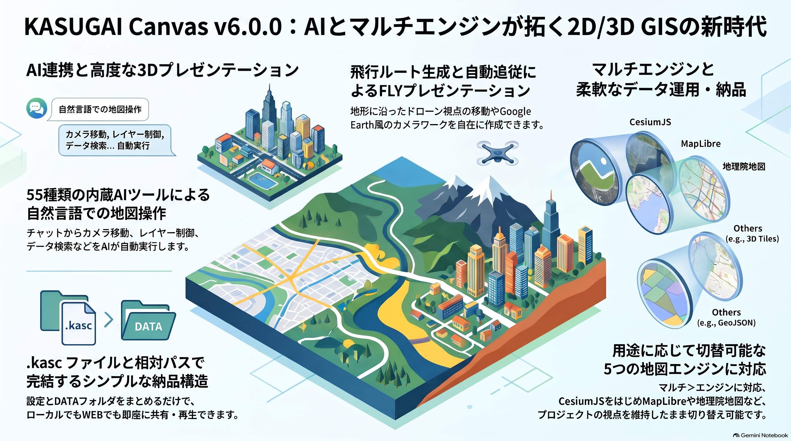

1. 📋 概要
KASUGAI Canvas は、CesiumJS + Three.js を核とした 2D/3D データ可視化システムです。Re:Earth GeoSuite と上位互換の GIS 基本機能に加え、KASUGAI 独自の FLY 機能・AIチャット（Gemini / OpenAI互換 / GitHub Copilot・Devin・Antigravity（アプリ版）連携）を備えています。
v3.4.2 以降、地図タイル・検索・レイヤー取得は CesiumJS が直接行い、Rust サーバーはバージョン管理・シャットダウン・ヘルスチェック API のみ提供します。

2. 🌐💻 2つの利用形態
利用形態は2系統です。メインはインストール不要のブラウザ WebGIS（CDN エンジン × 外部ホストの .kasc）、フル機能が必要な場合はローカルアプリを使います。
ブラウザ WebGIS（メイン・インストール不要）
CDN（kasugai-canvas-web）が配信するエンジンに、外部ホストの .kasc を ?kasc= で指定して開くサーバレスな WebGIS です。QGIS の geo_webview でエクスポートした .kasc+DATA/ を任意の静的ホストに置くだけで使えます。公開デモもこの形態の実例です。
詳細は ブラウザ WebGIS ガイド（必須ファイル・?kasc= 仕様・公開デモ）を参照してください。
ローカルアプリ kasugai_canvas.exe（フル機能）
インストールして使うフル機能版です（QGIS連携・ファイル保存・rclone クラウド連携・AIブリッジなど、localhost:8510 で動作）。配布物は download/ フォルダから直接ダウンロードできます。インストーラー版を推奨します — .kasc ファイルのダブルクリック起動（拡張子の関連付け＝外部プロジェクト登録）はインストーラー版でのみ利用できます。
詳しい手順は ローカルアプリのガイド を参照してください。
3. 🔗 連携構成図 — どこで動くか
KASUGAI Canvas は エンジン（プレイヤー本体）とデータ（.kasc + DATA/）が分離した設計です。開発の起点は kasugai_canvas リポジトリの web/（エンジン正本）で、そこから GitHub Pages CDN（kasugai-canvas-web） と 配布 ZIP（ローカルアプリ） の2経路で発行されます。メインの使い方は、CDN が配信するエンジンに静的ホスト上の .kasc を ?kasc= で指定して開く サーバレスな WebGIS です（インストール不要）。
flowchart TB REPO["kasugai_canvas リポジトリ（開発の起点）
web/ = エンジン正本 ＋ server/ = Rust アプリ"] REPO ==>|"tools/publish_cdn.py"| CDN["GitHub Pages CDN（メイン）
kasugai-canvas-web
stable/・unstable/
cesium / maplibre / openlayers / leaflet / gsimaps"] REPO ==>|"run.py -B → ZIP（自動更新）"| APP["ローカルアプリ
kasugai_canvas.exe :8510
フル機能（QGIS連携・保存・rclone・AIブリッジ）"] CDN -.->|"vendored gsimaps を
/vendor/ プロキシでオンデマンド配信"| APP LIBCDN["公開ライブラリ CDN
jsdelivr / unpkg
CesiumJS・Leaflet・MapLibre・OL・DuckDB-WASM 等"] LIBCDN -.->|"描画ライブラリを配信
（全エンジン・全形態でオンライン前提）"| WEB LIBCDN -.->|"アプリ同梱 web/ が参照"| APP QGIS["QGIS + geo_webview"] -->|"エクスポート"| DATA[".kasc + DATA/ のみ配置
任意の静的ホスト or :8089
（エンジンは CDN 経由）"] CDN ==>|"エンジンを配信"| WEB["ブラウザ WebGIS（メインの利用形態）
…/<engine>/?kasc=<.kascのURL>
CDN経由ならインストール不要"] DATA -.->|"?kasc= で指定"| WEB QGIS -.->|"▶ Canvas で登録"| APP AGENTS["外部エージェント
GitHub Copilot / Devin / Antigravity
要各CLI・本人認証"] ==>|"AI が地図を制御
（reply/actions を返す）"| BRIDGE["AIブリッジハブ
ローカルアプリ=8511 / ブラウザ WebGIS=8512
チャット ─POST /agent {provider,...}→
選択中プロバイダのみ内部起動"] APP ---|"アプリ内モジュール（自動待受 :8511）"| BRIDGE CDN -.->|"download/bridge-hub.zip を配信"| BRIDGE BRIDGE -.->|"同一PCなら /health 検出（8512→8511）で接続"| WEB AIAPI["AI API（内蔵AI）
Gemini / OpenAI互換
BYOキー or /api/gemini キー隠蔽プロキシ
（workers・Cloud Run・ローカル）"] ==>|"AI が地図を制御
（function calling）"| WEB WEB --- DEMO["公開デモ（WebGIS の実例）
CDNホスト版＝CDN経由
Cloudflare Pages / Workers / Cloud Run
＝web/自前配信＋認証・/api/*"] classDef webgis fill:#eef0ff,stroke:#667eea,color:#1a2230 classDef localapp fill:#e9f7ee,stroke:#2e9e56,color:#1a2230 classDef ai fill:#f4eaff,stroke:#8a4fff,color:#1a2230 classDef neutral fill:#f6f8fa,stroke:#9aa5b1,color:#5a6577 class WEB,CDN webgis class APP localapp class BRIDGE,AGENTS,AIAPI ai class QGIS,DATA,DEMO,LIBCDN neutral
実行時の供給元 — 何をどこから読むか
web/ 一式は publish_cdn.py が CDN へ丸ごとミラーするため、shared/ 等の同じファイルが CDN と配布 ZIP の両方に存在します。どちらを読むかは開いているページのオリジンで決まります（エンジンコードは全て相対パス参照）。ローカルアプリが kasugai-canvas-web を参照するのは /vendor/* のみです。
| 取得物 | ローカルアプリ（:8510） | ブラウザ WebGIS（CDN エンジン） |
|---|---|---|
| プレイヤーコード （ web/<engine>/・shared/） |
アプリ同梱 web/ から配信 |
CDN から配信 |
| vendored 地理院地図 （ vendor/gsimaps/・約75MB） |
同梱せず → /vendor/ プロキシ経由で CDN から（CDN 不通時はホスト版へ転送） |
CDN から |
| 描画ライブラリ （CesiumJS・Leaflet・MapLibre・OL・DuckDB-WASM 等） |
jsdelivr / unpkg | jsdelivr / unpkg |
| 地図タイル・データ | 地理院・OSM 等の外部サーバー | 同左 |
再生 URL …/<stage>/<engine>/?kasc=<.kascのURL> の意味:
| 要素 | 値 | 意味 |
|---|---|---|
<stage> |
stable（既定）/ unstable |
CDN の配信チャンネル。stable=安定版・unstable=開発版 |
<engine> |
cesium / maplibre / openlayers / leaflet / gsimaps |
再生に使う描画エンジン。cesium がメイン（3D・フル機能）、他は同じ .kasc を読む互換プレイヤー |
?kasc= |
.kasc ファイルの URL（要 URL エンコード） | DATA/ 等の相対参照は .kasc のある URL 基準で解決されるため、.kasc と DATA/ は同じフォルダに置く |
静的ホストへ .kasc+DATA/ だけを置く通常の WebGIS 配信では、エンジンは常に CDN（kasugai-canvas-web）から読み込まれます。機能面ではローカルアプリだけがフル機能（QGIS連携・ファイル保存・rclone・AIブリッジ）を持ち、内蔵AI（Gemini / OpenAI互換）はハブを介さず、ブラウザから API へ直接（BYOキー）またはバックエンドの /api/gemini キー隠蔽プロキシ経由で動作します。AIブリッジはブリッジハブがチャットの POST /agent を受けて GitHub Copilot / Devin / Antigravity へ中継します。ハブはアプリ内モジュールが 127.0.0.1:8511 で自動待受し、アプリ未導入環境では bridge-hub（Rust 製 bridge-hub.exe・Node.js 不要）の単体起動（同梱スクリプトは 8512 既定）で常駐させられ、ブラウザ WebGIS 用の一式は CDN の download/bridge-hub.zip から取得できます（AI 設定画面にダウンロードリンクあり）。フロントは同一 PC の 8512 → 8511 の順に /health を検出して接続するため、CDN 経由のブラウザ WebGIS からもブリッジ系プロバイダが選べます（逆方向の「外部 → ブラウザを操る」はアプリ本体 :8510 の /api/command）。CDN 経由はブラウザ閲覧中心です。なおローカルアプリも vendored gsimaps（地理院地図実体・約75MB）は同梱せず、/vendor/* のミスを CDN へプロキシして同一オリジン供給するため、実行時は CDN が配信元になります。さらに描画ライブラリ（CesiumJS・Leaflet・MapLibre・OpenLayers・DuckDB-WASM 等）は全エンジンが jsdelivr/unpkg から読み込むため、配布形態に関わらずブラウザ実行は常にオンライン前提です。公開デモはいずれもこの WebGIS の実例で、Cloudflare Pages/Workers・Cloud Run 版は web/ を自前配信し認証・/api/* を付加した構成です（基本の配布経路は CDN + 配布ZIP の2系統）。データの配信元は静的ホストのほか、QGIS 側の geo_webview 内蔵サーバー（localhost:8089 /export-data/）からも読めます（自分の PC 上のみ有効）。詳細は kasugai-canvas-web ガイド を参照してください。
4. 📚 ドキュメント
🌐 ブラウザ WebGIS（外部ホスト配信）
CDN エンジン × 外部ホストの .kasc で動くサーバレス WebGIS。必須ファイル・?kasc= 仕様・公開デモ
💻 ローカルアプリ（kasugai_canvas.exe）
インストール・起動方法・プロジェクト構成・設定の保存・FLY 機能の操作・配布と公開の形態
🗺️ 機能と実装
GIS 基本機能・Fly プレゼン機能の一覧と、現行実装の仕組み・ドレープ・制限事項
📝 .kasc 設定仕様
インスペクター設定ファイルの完全な書式。行タイプ・オプション・グループ化ルール
🤖 AI ツール仕様
内蔵AIが制御できる全52ツールの定義。引数・提供条件・実行モデル
技術選定
🗂️ データ形式
対応データ形式と 2D/3D データの最適フォーマット、配信・管理の考え方
🧰 ライブラリ
CesiumJS・Three.js を中心とした描画基盤と補完ライブラリの選定
🏗️ システム構成
ローカルPC・サーバーレス・国内対応・組み込みの構成方針
🛡️ セキュリティ対策
認証トークン・データ配信・fetch 許可リストなど実装済みの保護機構と既知の制限
拡張・連携
🔐 認証とプラグイン
認証方式 0〜7 の比較と設定手順、プラグインによる機能拡張
🤖 Google 連携・AI
AI チャット（Gemini・OpenAI互換・Copilot・Devin・Antigravity）・Maps Platform・外部エージェント連携・AIプラグイン生成
🔗 QGIS・GDAL 連携（構想）
QGIS・GDAL を変換・配信基盤とする連携構想と実装ロードマップ